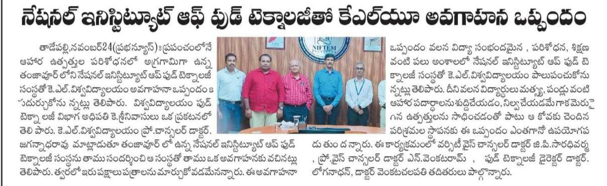
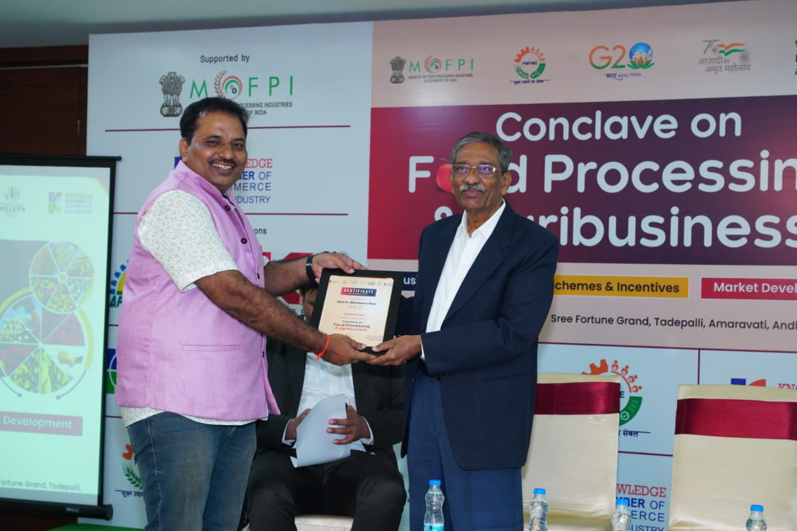
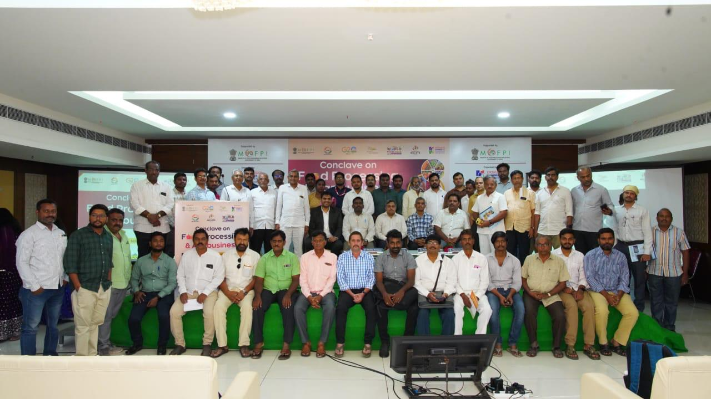
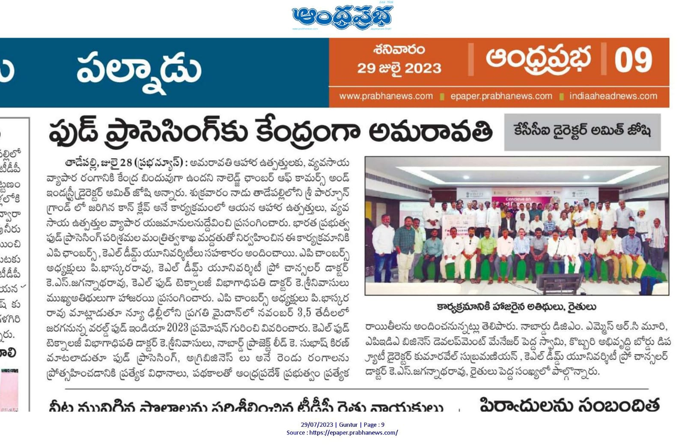
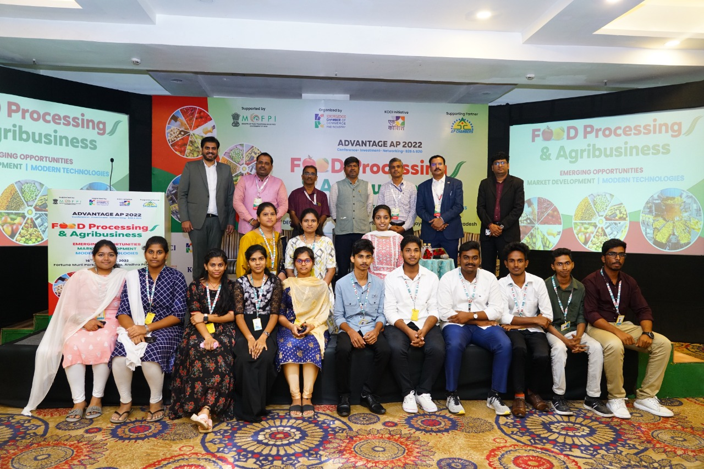
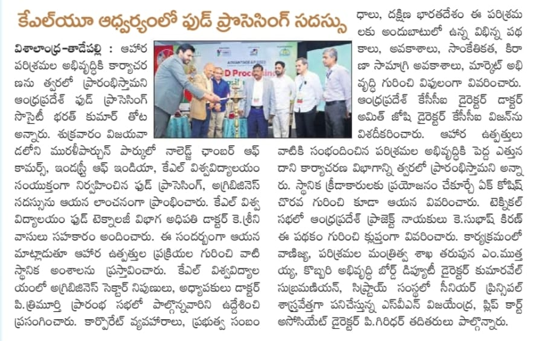
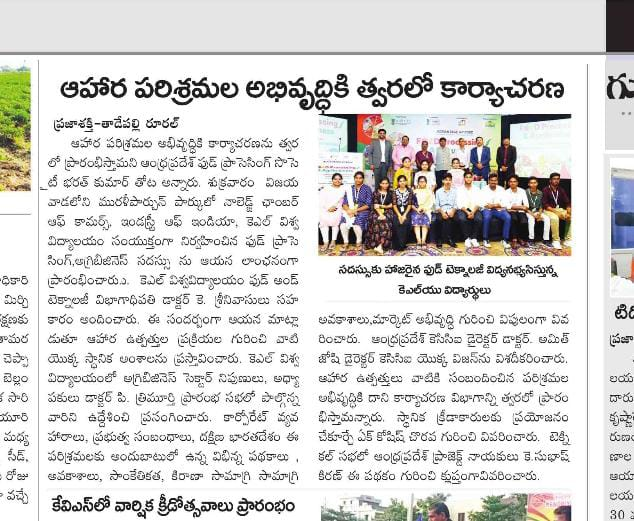
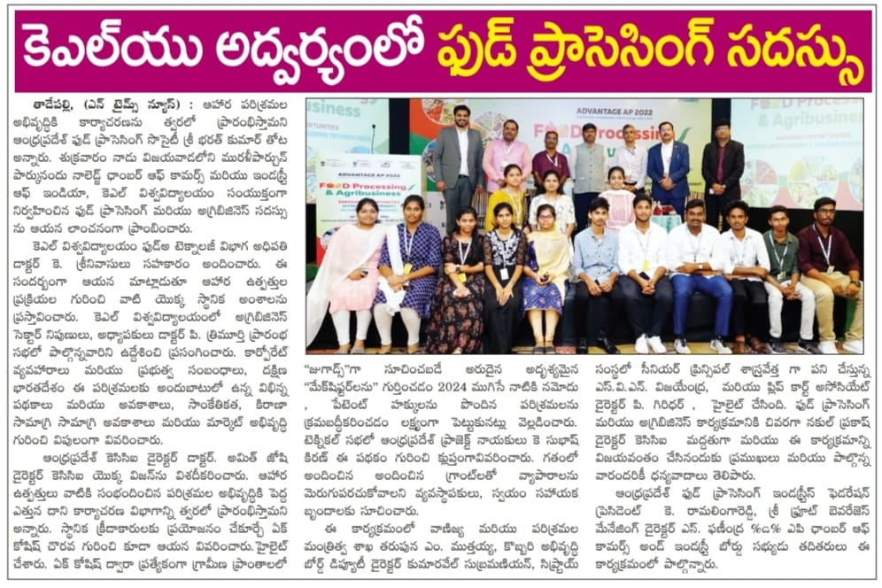

.png) FOOD TECHNOLOGY
FOOD TECHNOLOGYAssociations/Collaborations
Prof. Jagannadha Rao (Pro-Chancellor) and Prof. Shinivasulu (Head-Department of Food Technology) visited NIFTEM-T (National Institute of Food Technology, Entrepreneurship, and Management at Thanjavur),the premier food processing technology institute in the country. NIFTEM is operational under the Ministry of Food Processing Industries (MoFPI) and is a pioneer Research and Educational Institution in the field of food science and technology.Apart from training, the institute is involved in intensive research and development activities with focus on all food technology areas including fish, meat and dairy products processing. Prof. Jagannadha Rao and Prof. Shrinivasulu had a fruitful discussionwith the NIFTEM director regarding establishing associations between KLEF and NIFTEM via signing MoUs in order to improve academic, skilling, and joint research activities.

News & Events
Food & Agribusiness Conclave
On 28th July 2023, KL University provided support to the "Conclave on Food Processing and Agribusiness". The event was organized at Tadepalli, Andhra Pradesh by the "Knowledge Chamber of Commerce and Industry" and was supported by the Ministry of Food Processing Industries (MoFPI). The eminent speakers Dr. Amit Joshi (Director-Knowledge Chamber of Commerce and Industry), Mr. P. Bhaskara Rao (President-AP Chambers), Prof. Jagannadha Rao (Pro-Chancellor, KL University), Mr. K. Subhash Kiran (Project Lead-Prime Minister Formalization of Micro Food Processing Enterprises (PMFME), Andhra Pradesh), Mr. K. Ramalinga Reddy (President-AP Food Processing Industries Federation), Mr. MSRC Murthy (DGM-NABARD), Mr. D. Pedda Swamy (Business Development Manager-APEDA), Mr. K S S Sitaram (Zonal Manager-APIIC Ltd.), Mr. Kumaravel Subramanian (Deputy Director-Coconut Development Board), and Prof. K. Srinivasulu (Head-Department of Food Technology, KL University) highlighted business opportunities, schemes and incentives, and market development in the field. Moreover, two students from the BS-Food Technology program at KL University actively participated in the program and received a "Certificate of Appreciation".
  Millet Buffet
In the light of the "International Year of Millets 2023" as declared by the United Nations General Assembly, a "Millet Buffet" was organized by the department in the Vaddeswaram campus. The "Millet Buffet" was an attempt to raise awareness about millets in the public. Millets have traditionally been a part of the Indian diet and are being recognized as "Nutri-Cereals" due to their high nutritional content compared to the morecommonly grown cereals; wheat, rice or corn.
Industry Visit
The BS-Food Technology students along with the faculty members visited a food processing unit "Vijaya Krishna Agro Food Processing Pvt. Ltd." On 4th February 2023 atRemalle village near Vijayawada. The officials at the unit enlightened about the facilities and operationson various plant foods including mango, guava, and chillifrom raw material to finished product.
Guest lecture on Global trends in Food Processing Technology
A guest lecture on the topic "Global trends in Food Processing Technology" was arranged on 17th February 2023by the department for the students of BS-Food Technology and B.Sc.-Agriculture. The guest speaker, Mr. Rama Krishna Bathina is a Food Processing expert. He is currently working for Olam Foods International, a multinational company. The talk was very insightful and helped the audience to learn about quality and processing aspects of certain food products.
A food and agribusiness conference in Vijayawada
KCCI (Knowledge Chamber of Commerce, India) and Department of Food Technology, KL University conducted a seminar on Food Processing and Agribusiness. It was attended by Dr. Amit Joshi (Director, KCCI) and Dr. K. Shrinivasulu (Professor and Head, Department of Food Technology), and other distinguished guests includes T. Bharathkumar Thota, M. Mutthaiah.



